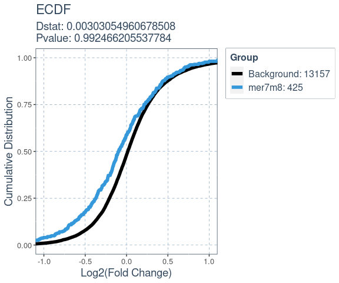

The goal of SeedMatchR is to help users identify potential seed-mediated effects in their RNAseq data.
Installation
You can install the development version of SeedMatchR from GitHub or the stable build from CRAN.
# Install from GitHub
install.packages("devtools")
devtools::install_github("tacazares/SeedMatchR")Troubleshooting installation issues
There have been some issues with installing SeedMatchR on Mac OS and Linux, especially if you use the most recent version of R (≥ 4.3). One potential suggestion is to use the version of R that was used in development (4.1.2), though SeedMatchR should work on the most recent version as well.
In addition, some users have issues with ggmsa. The package ggmsa requires the installations of the msa package to work. There have been issues with using the plot_seeds() function that cause errors due to a missing loaded package. To fix this, users must install and load the msa package from CRAN, in addition to SeedMatchR.
SeedMatchR has been installed and tested on the most recent builds of R for Mac OS, Windows, and Linux. The results of the build tests are found here: https://github.com/tacazares/SeedMatchR/actions/runs/6634297920
The file containing the working versions of each dependency is listed in the GitHub actions logs. For example, the most recent Mac OS build dependencies that work can be found in this log.
Quick start example with public siRNA data
This example uses the siRNA sequence, D1, targeting the Ttr gene in rat liver from the publication:
Schlegel MK, Janas MM, Jiang Y, Barry JD, Davis W, Agarwal S, Berman D, Brown CR, Castoreno A, LeBlanc S, Liebow A, Mayo T, Milstein S, Nguyen T, Shulga-Morskaya S, Hyde S, Schofield S, Szeto J, Woods LB, Yilmaz VO, Manoharan M, Egli M, Charissé K, Sepp-Lorenzino L, Haslett P, Fitzgerald K, Jadhav V, Maier MA. From bench to bedside: Improving the clinical safety of GalNAc-siRNA conjugates using seed-pairing destabilization. Nucleic Acids Res. 2022 Jul 8;50(12):6656-6670. doi: 10.1093/nar/gkac539. PMID: 35736224; PMCID: PMC9262600.The guide sequence of interest is 23 bp long and oriented 5’ -> 3’.
# siRNA sequence of interest targeting a 23 bp region of the Ttr gene
guide.seq = "UUAUAGAGCAAGAACACUGUUUU"Load rat specific annotation data.
We use AnnotationHub to derive the GTF and DNA sequence files for the species of interest. Once you have derived the annotations, you could save them as an Rdata object to increase the speed of loading the datasets.
Load annotation databases
# Load the species specific annotation database object
anno.db <- load_species_anno_db("rat")Extract features and sequences of interest from annotations
We will use the annotations to derive the features and feature sequences that we want to scan for each gene.
features = get_feature_seqs(anno.db$tx.db, anno.db$dna, feature.type = "3UTR")Prepare DESEQ2 Results
The test data that is provided with SeedMatchR was derived from the 2022 publication by Schlegel et al. The data set represents a DESeq2 analysis performed on rat liver that had been treated with Ttr targeting siRNA. We will use this example to explore seed mediated activity.
Download data (only need to perform once, can skip to loading if done)
We start by downloading the example data set. This function will download three files from the GEO accession GSE184929. These files represent three samples with different siRNA treatments at two dosages.
get_example_data("sirna")Load example data
We can load the example data into the environment.
sirna.data = load_example_data("sirna")The DESeq2 results are available through the names Schlegel_2022_Ttr_D1_30mkg, Schlegel_2022_Ttr_D4_30mkg and Schlegel_2022_Ttr_D1_10mkg. The data set name is long, so it will be renamed to res.
res <- sirna.data$Schlegel_2022_Ttr_D1_30mkgFilter example results
The DESeq2 results file is then filtered. The function filter_deseq() can be used to filter a results file by log2FoldChange, padj, baseMean, and remove NA entries.
# Dimensions before filtering
dim(res) # [1] 32883 6
#> [1] 32883 8
# Filter DESeq2 results for SeedMatchR
res = filter_deseq(res, fdr.cutoff=1, fc.cutoff=0, rm.na.log2fc = T)
# Dimensions after filtering
dim(res) # [1] 13582 8
#> [1] 13582 8Counting seed matches in transcripts
You can perform a seed match for a single seed using the SeedMatchR() function.
res = SeedMatchR(res, anno.db$gtf, features$seqs, guide.seq, "mer7m8")
head(res)
#> gene_id baseMean log2FoldChange lfcSE stat pvalue
#> 1 ENSRNOG00000016275 2138.0945 -8.164615 NA -23.61818 2.507268e-123
#> 2 ENSRNOG00000000127 437.6342 -1.346927 0.1068629 -12.60425 2.000712e-36
#> 3 ENSRNOG00000047179 1590.1745 -1.262411 0.1031403 -12.23974 1.906387e-34
#> 4 ENSRNOG00000030187 131.9206 3.422725 0.3032352 11.28736 1.515189e-29
#> 5 ENSRNOG00000008050 38.9921 -3.442834 0.3192776 -10.78320 4.132589e-27
#> 6 ENSRNOG00000008816 400.9526 2.794453 0.2661369 10.50006 8.632549e-26
#> padj symbol mer7m8
#> 1 3.405371e-119 Ttr 1
#> 2 1.358683e-32 Kpna6 0
#> 3 8.630849e-31 Aplp2 1
#> 4 5.144824e-26 Mmp12 0
#> 5 1.122577e-23 Stac3 0
#> 6 1.954121e-22 Gpnmb 0Match multiple seeds
You can perform seed matching for all available seeds using a for loop. The results will be appended as a new column to the results data frame.
for (seed in c("mer8", "mer6", "mer7A1")){
res <- SeedMatchR(res, anno.db$gtf, features$seqs, guide.seq, seed.name = seed)
}
head(res)
#> gene_id baseMean log2FoldChange lfcSE stat pvalue
#> 1 ENSRNOG00000016275 2138.0945 -8.164615 NA -23.61818 2.507268e-123
#> 2 ENSRNOG00000000127 437.6342 -1.346927 0.1068629 -12.60425 2.000712e-36
#> 3 ENSRNOG00000047179 1590.1745 -1.262411 0.1031403 -12.23974 1.906387e-34
#> 4 ENSRNOG00000030187 131.9206 3.422725 0.3032352 11.28736 1.515189e-29
#> 5 ENSRNOG00000008050 38.9921 -3.442834 0.3192776 -10.78320 4.132589e-27
#> 6 ENSRNOG00000008816 400.9526 2.794453 0.2661369 10.50006 8.632549e-26
#> padj symbol mer7m8 mer8 mer6 mer7A1
#> 1 3.405371e-119 Ttr 1 1 1 1
#> 2 1.358683e-32 Kpna6 0 0 0 0
#> 3 8.630849e-31 Aplp2 1 0 1 0
#> 4 5.144824e-26 Mmp12 0 0 0 0
#> 5 1.122577e-23 Stac3 0 0 0 0
#> 6 1.954121e-22 Gpnmb 0 0 0 0Comparing the expression profiles of seed targets to background
Many factors that perturb gene expression, like miRNA, show cumulative changes in their targets gene expression. Cumulative changes in the profile of genes expression can be visualized and tested with the emperical distribution function (ecdf) coupled with a statistical test such as the Kolmogorov-Smirnov test.
SeedMatchR provides functions for comparing the log2(Fold Change) of two gene sets. The function deseq_fc_ecdf is designed to work directly with a DESeq2 results data frame.
Required Inputs:
-
res: DESeq2 results data frame -
gene.lists: A list of lists containing gene names
# Gene set 1
mer7m8.list = res$gene_id[res$mer7m8 >= 1]
# Gene set 2
background.list = res$gene_id[res$mer7m8 == 0]
ecdf.results = de_fc_ecdf(res,
list("Background" = background.list,
"mer7m8" = mer7m8.list),
stats.test = "KS",
factor.order = c("Background",
"mer7m8"),
null.name = "Background",
target.name = "mer7m8",)
#> Comparing: Background vs. mer7m8
ecdf.results$plot